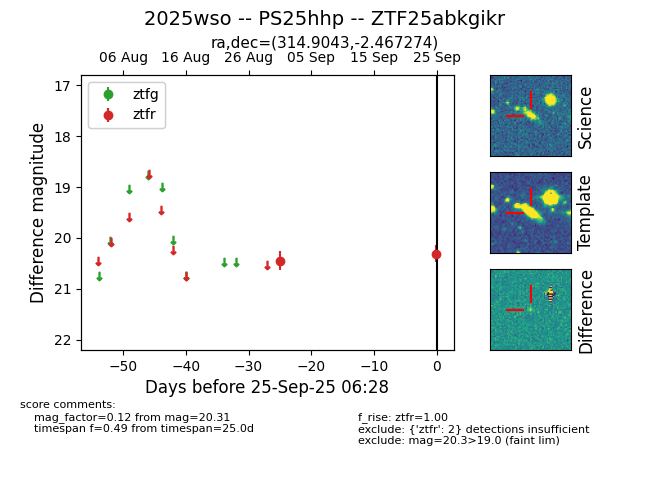

FINK: ZTF25abkgikr
Lasair: ZTF25abkgikr
ALeRCE: ZTF25abkgikr
TNS: 2025wso
YSE: 2025wso
ZTF25abkgikr (ztf,fink)
2025wso (tns,yse)
PS25hhp (panstarrs)
equatorial (ra, dec) = (314.9043,-2.46727)
galactic (l, b) = (46.4377,-29.43288)

last ztfr=20.31
2 ztfr detections